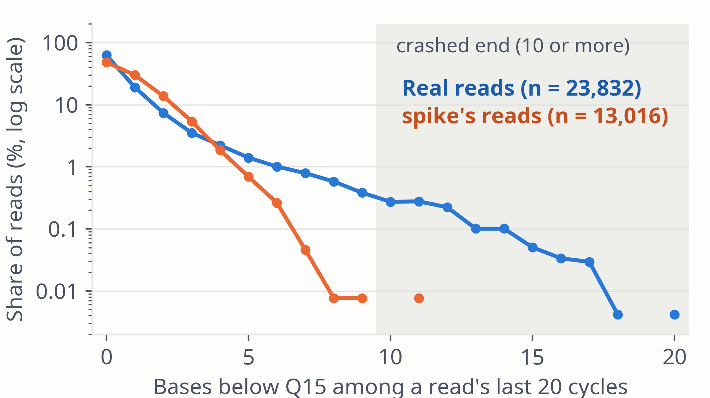

| Crashed end | Share of reads (95% CI) |
|---|---|
| Real | 1.10% (0.97–1.24%); 261 / 23,832 |
| spike | 0.008% (0.001–0.044%); 1 / 13,016 |
A first-order chain remembers one base back, so the chance of staying low falls off geometrically. Real reads stay low far longer.
Copying whole donor quality strings reached 1.26% vs 1.48% real on the hospital BAM, but not the real reads' soft-clip rate; not merged.
Figure 13. Number of bases below Q15 among each read's last 20 cycles, real vs spike's reads (log scale; zero counts not drawn). Crashed end: ≥ 10 of 20. CIs: Wilson.
spike · Results · 20 / 25